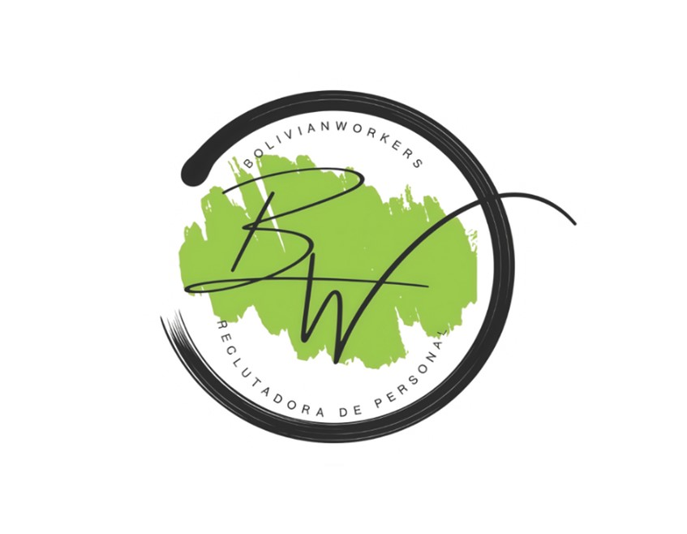

Oportunidades Laborales Disponibles
Explora las diversas áreas profesionales donde puedes desarrollar tu carrera internacional



Te conectamos con oportunidades laborales seguras y legales en distintos países
Somos tu socio confiable para alcanzar tus metas profesionales en el extranjero
Acompañamiento completo en documentación y procesos migratorios
Acceso a ofertas laborales en más de 15 países alrededor del mundo
Soporte antes, durante y después de tu viaje laboral
Miles de profesionales ya trabajando exitosamente en el extranjero
Somos una fundación comprometida con el desarrollo profesional de bolivianos talentosos, conectándolos con oportunidades laborales internacionales que transforman vidas y construyen futuros prósperos.
Nuestra misión es facilitar procesos migratorios seguros y legales, garantizando el bienestar de nuestros profesionales antes, durante y después de su experiencia laboral internacional.
"Construimos puentes entre el talento boliviano y las oportunidades globales"
Conoce todas las vacantes y programas internacionales disponibles para profesionales bolivianos.
Descargar CatálogoExplora las diversas áreas profesionales donde puedes desarrollar tu carrera internacional